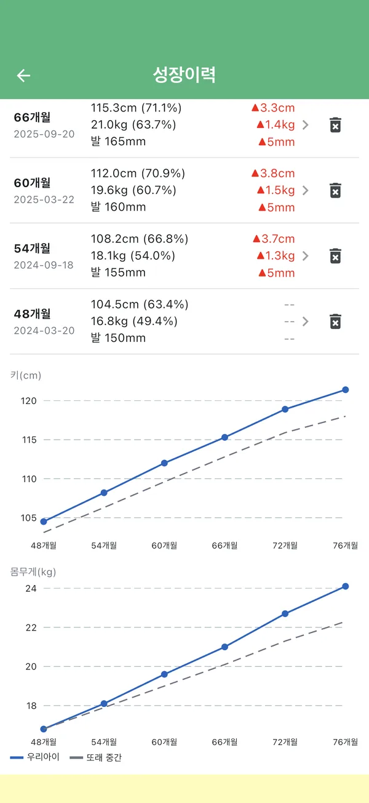
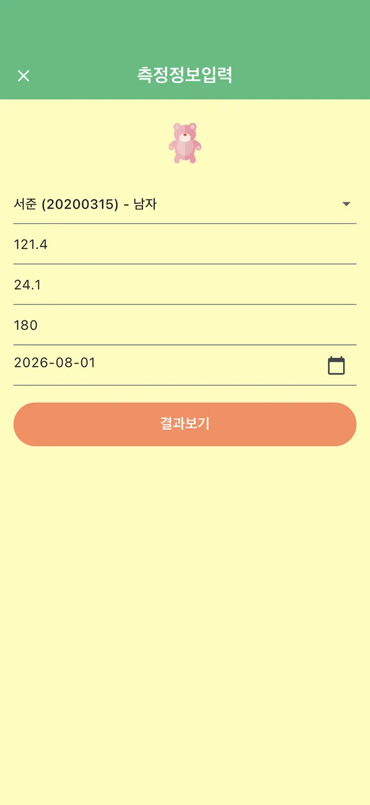
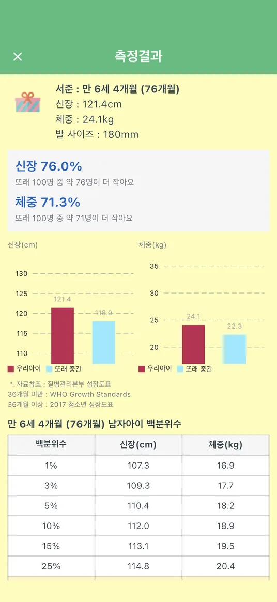

자녀 성장발달 기록
우리 아이,
또래보다 얼마나 클까요?
생년월일과 키·몸무게만 넣으면, 질병관리청 성장도표를 기준으로 또래 100명 중 몇 번째인지 쉬운 말로 알려 드려요. 기록이 쌓이면 성장 그래프로 변화를 한눈에 봐요.
무료 · 광고 포함 · 회원가입 없음

세 단계면 충분해요
병원에 가기 전에도, 집에서 잰 키로 바로 확인해요.
-

아이를 등록해요
이름(별칭)과 생년월일, 성별만 넣으면 돼요. 여러 자녀를 각각 등록해 따로 기록해요.
-

키·몸무게를 넣어요
지난 날짜에 잰 값도 측정일을 골라 넣으면 그날 나이 기준으로 계산해요. 발 사이즈는 원할 때만.
-

백분위를 확인해요
“또래 100명 중 약 76명이 더 작아요”처럼 쉬운 말로 알려 드리고, 또래 중간값과 나란히 비교해요.
화면마다 자세한 사용법은 사용 설명서에 화면 사진과 함께 정리했어요.
그 밖에 이런 것도 해요
기록이 쌓일수록 쓸모가 커져요.
- 성장 그래프키·몸무게 변화를 또래 중간값(50백분위) 점선과 함께 그려요.
- 직전 대비 변화지난번보다 얼마나 컸는지 ▲·▼로 바로 보여 드려요.
- 여러 자녀 관리형제자매를 각각 등록해 아이별로 따로 기록해요.
- 기록 백업기기 자동 백업에 더해, 파일로 내보내 두었다가 다시 가져올 수 있어요.
무엇을 기준으로 하나요?
36개월 미만은 WHO 성장 기준(WHO Growth Standards), 36개월 이상은 2017 소아·청소년 성장도표(질병관리청)를 써요. 만 0세(출생 시)부터 만 19세까지 지원해요.
백분위는 참고용 정보이며 의학적 진단을 대신하지 않아요. 걱정되는 점이 있다면 소아청소년과 전문의와 상담해 주세요.
아이 정보와 측정 기록은 회원가입 없이 사용하는 기기 안에만 저장되고, 서버로 보내지 않아요. 자세한 내용은 개인정보 처리방침에 있어요.
기기에 맞는 스토어로 가요